Concluso
Prossimo GP
In programma
Data spostata
Tutti i Round 2026
| # | Gran Premio | Date | Stato | |
|---|---|---|---|---|
| — Febbraio · Marzo 2026 — | ||||
01 |
🇹🇭 |
Gran Premio della Thailandia
Chang International Circuit · Buriram
|
 27 feb – 1 mar |
✓ Risultati → |
02 |
🇧🇷 |
Gran Premio del Brasile
Autódromo Internacional de Goiânia
|
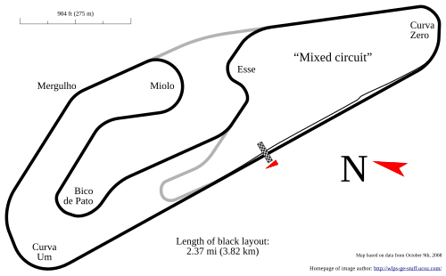 20 – 22 mar |
✓ Risultati → |
03 |
🇺🇸 |
Gran Premio degli USA
Circuit of the Americas · Austin
|
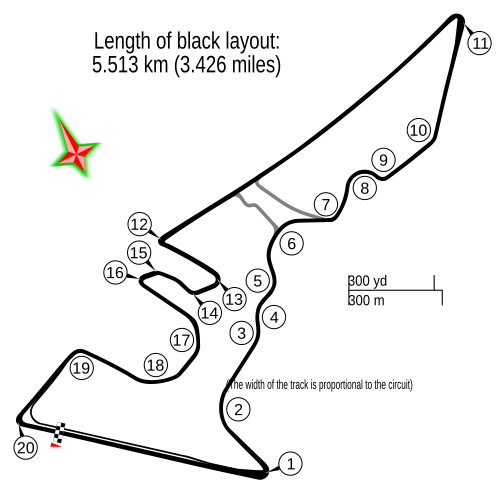 27 – 29 mar |
✓ Risultati → |
| — Aprile 2026 — | ||||
04 |
🇪🇸 |
Gran Premio di Spagna
Circuito de Jerez – Ángel Nieto
|
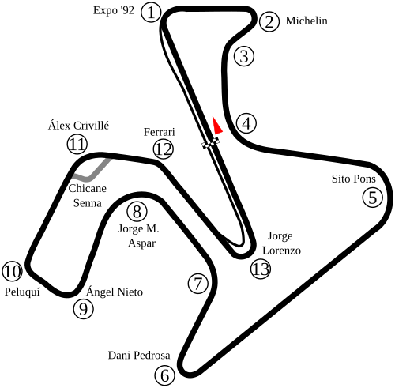 24 – 26 apr |
⚡ Prossimo → |
| — Maggio 2026 — | ||||
05 |
🇫🇷 |
Gran Premio di Francia
Circuit Bugatti · Le Mans
|
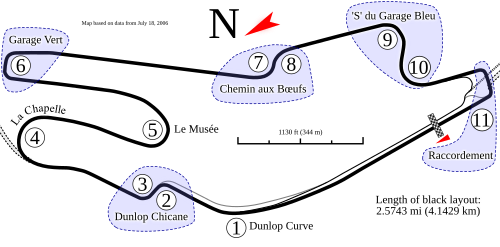 8 – 10 mag |
In programma |
06 |
🇪🇸 |
Gran Premio di Catalunya
Circuit de Barcelona-Catalunya
|
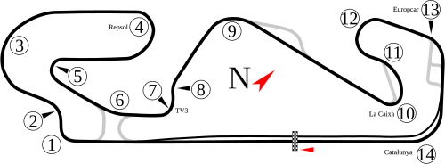 15 – 17 mag |
In programma |
07 |
🇮🇹 |
Gran Premio d'Italia
Autodromo Internazionale del Mugello
|
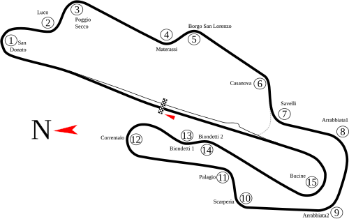 29 – 31 mag |
In programma |
| — Giugno 2026 — | ||||
08 |
🇭🇺 |
Gran Premio d'Ungheria
Balaton Park Circuit · Zalaegerszeg
|
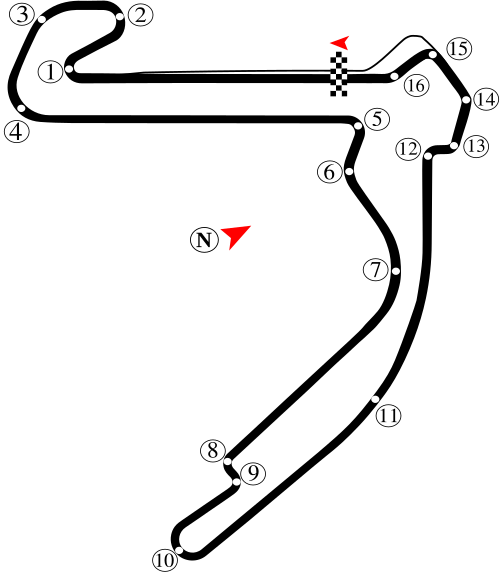 5 – 7 giu |
In programma |
09 |
🇨🇿 |
Gran Premio della Repubblica Ceca
Automotodrom Brno
|
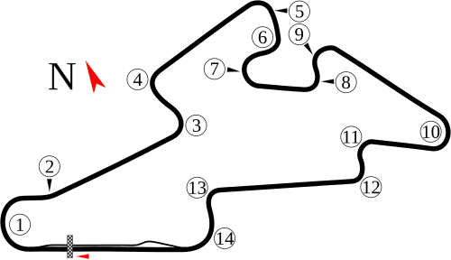 19 – 21 giu |
In programma |
10 |
🇳🇱 |
Gran Premio d'Olanda
TT Circuit Assen
|
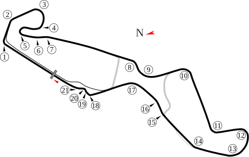 26 – 28 giu |
In programma |
| — Luglio 2026 — | ||||
11 |
🇩🇪 |
Gran Premio di Germania
Sachsenring · Hohenstein-Ernstthal
|
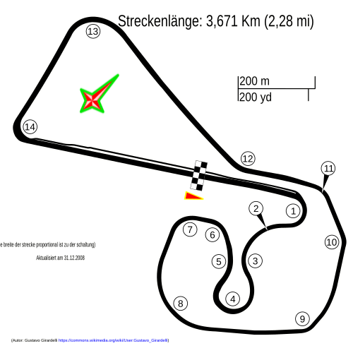 10 – 12 lug |
In programma |
| — Agosto 2026 — | ||||
12 |
🇬🇧 |
Gran Premio di Gran Bretagna
Silverstone Circuit
|
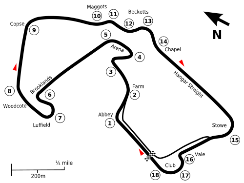 7 – 9 ago |
In programma |
13 |
🇪🇸 |
Gran Premio di Aragona
MotorLand Aragón · Alcañiz
|
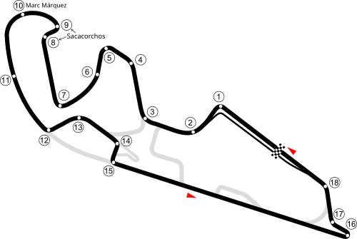 28 – 30 ago |
In programma |
| — Settembre 2026 — | ||||
14 |
🇮🇹 |
Gran Premio di San Marino
Misano World Circuit Marco Simoncelli
|
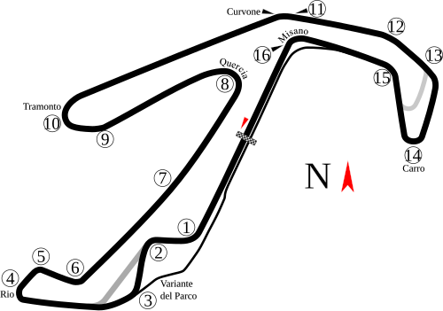 11 – 13 set |
In programma |
15 |
🇦🇹 |
Gran Premio d'Austria
Red Bull Ring · Spielberg
|
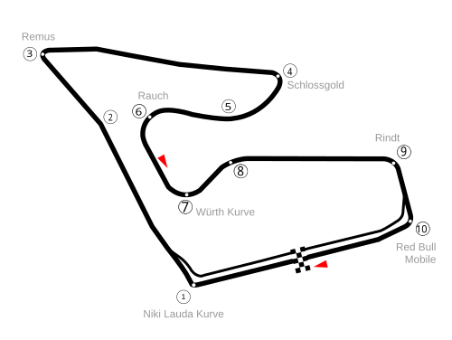 18 – 20 set |
In programma |
| — Ottobre 2026 — | ||||
16 |
🇯🇵 |
Gran Premio del Giappone
Twin Ring Motegi
|
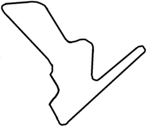 2 – 4 ott |
In programma |
17 |
🇮🇩 |
Gran Premio d'Indonesia
Pertamina Mandalika Street Circuit
|
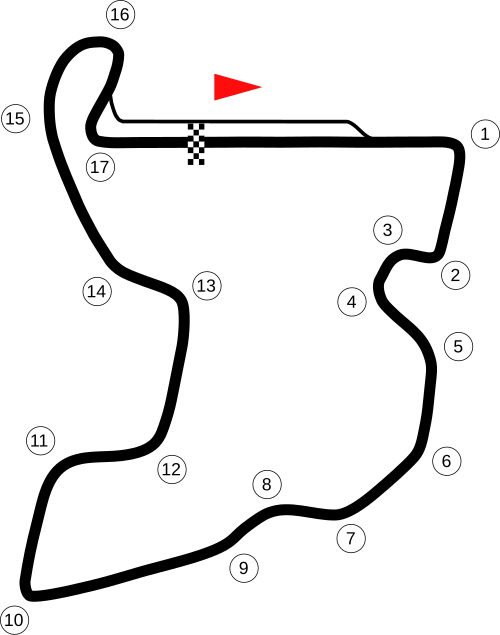 9 – 11 ott |
In programma |
18 |
🇦🇺 |
Gran Premio d'Australia
Phillip Island Grand Prix Circuit
|
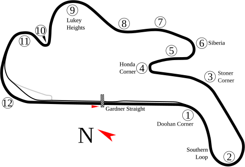 23 – 25 ott |
In programma |
19 |
🇲🇾 |
Gran Premio della Malesia
Sepang International Circuit
|
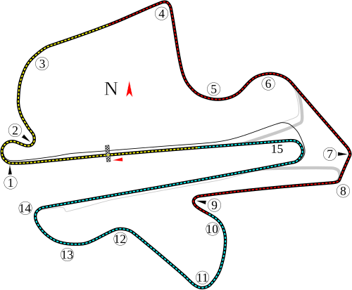 30 ott – 1 nov |
In programma |
20 |
🇶🇦 |
Gran Premio del Qatar
Lusail International Circuit
⚠️ Spostato da aprile a novembre 2026
|
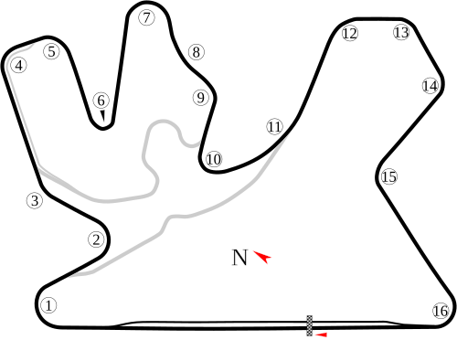 6 – 8 nov
🔁 Data modificata
|
🔁 Spostato |
21 |
🇵🇹 |
Gran Premio del Portogallo
Autodromo Internacional do Algarve · Portimão
|
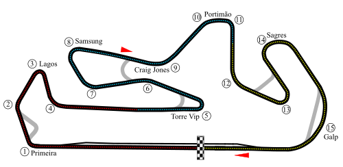 20 – 22 nov |
In programma |
22 |
🇪🇸 |
Gran Premio della Comunitat Valenciana
Circuit Ricardo Tormo · Cheste
🏆 Finale di stagione
|
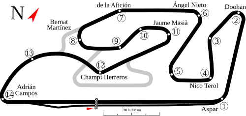 27 – 29 nov
🏆 Gran Finale
|
In programma |